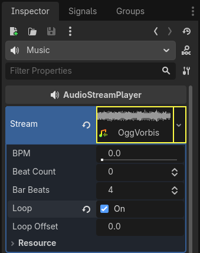

Finishing up
We have now completed all the functionality for our game. Below are some remaining steps to add a bit more "juice" to improve the game experience.
Feel free to expand the gameplay with your own ideas.
Background
The default gray background is not very appealing, so let's change its color.
One way to do this is to use a ColorRect node. Make it
the first node under Main so that it will be drawn behind the other nodes.
ColorRect only has one property: Color. Choose a color you like and
select "Layout" -> "Anchors Preset" -> "Full Rect" either in the toolbar at the top of the viewport or in the inspector so that it covers the screen.
You could also add a background image, if you have one, by using a TextureRect node instead.
Sound effects
Sound and music can be the single most effective way to add appeal to the game experience. In your game's art folder, you have two sound files: "House In a Forest Loop.ogg" for background music, and "gameover.wav" for when the player loses.
Add two AudioStreamPlayer nodes as children of
Main. Name one of them Music and the other DeathSound. On each one,
click on the Stream property, select "Load", and choose the corresponding
audio file.
All audio is automatically imported with the Loop setting disabled.
If you want the music to loop seamlessly, click on the Stream file arrow,
select Make Unique, then click on the Stream file and check the Loop box.

To play the music, add $Music.play() in the new_game()
function and $Music.stop() in the game_over() function.
Finally, add $DeathSound.play() in the game_over() function.
func game_over():
...
$Music.stop()
$DeathSound.play()
func new_game():
...
$Music.play()
public void GameOver()
{
...
GetNode<AudioStreamPlayer>("Music").Stop();
GetNode<AudioStreamPlayer>("DeathSound").Play();
}
public void NewGame()
{
...
GetNode<AudioStreamPlayer>("Music").Play();
}
Keyboard shortcut
Since the game is played with keyboard controls, it would be convenient if we
could also start the game by pressing a key on the keyboard. We can do this with
the "Shortcut" property of the Button node.
In a previous lesson, we created four input actions to move the character. We will create a similar input action to map to the start button.
Select "Project" -> "Project Settings" and then click on the "Input Map"
tab. In the same way you created the movement input actions, create a new
input action called start_game and add a key mapping for the Enter
key.

Now would be a good time to add controller support if you have one available. Attach or pair your controller and then under each input action that you wish to add controller support for, click on the "+" button and press the corresponding button, d-pad, or stick direction that you want to map to the respective input action.
In the HUD scene, select the StartButton and find its Shortcut
property in the Inspector. Create a new Shortcut resource
by clicking within the box, open the Events array and add a new array element
to it by clicking on Array[InputEvent] (size 0).

Create a new InputEventAction and select the start_game action.

Now when the start button appears, you can either click it or press Enter to start the game.
And with that, you completed your first 2D game in Godot.

You got to make a player-controlled character, enemies that spawn randomly around the game board, count the score, implement a game over and replay, user interface, sounds, and more. Congratulations!
There's still much to learn, but you can take a moment to appreciate what you achieved.
And when you're ready, you can move on to Your first 3D game to learn to create a complete 3D game from scratch, in Godot.